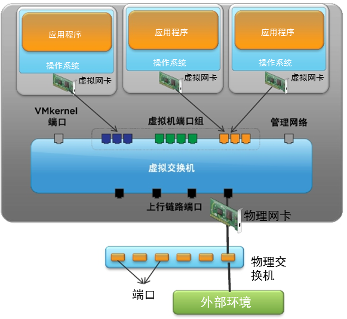
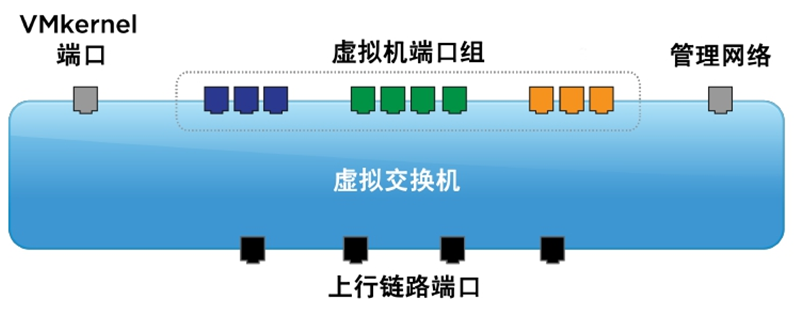
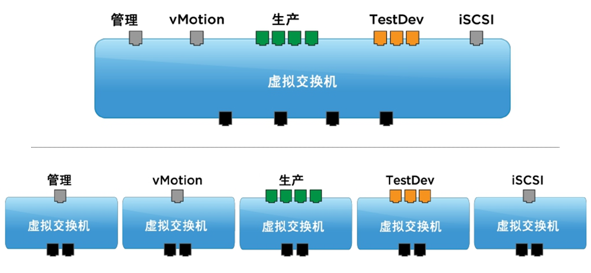
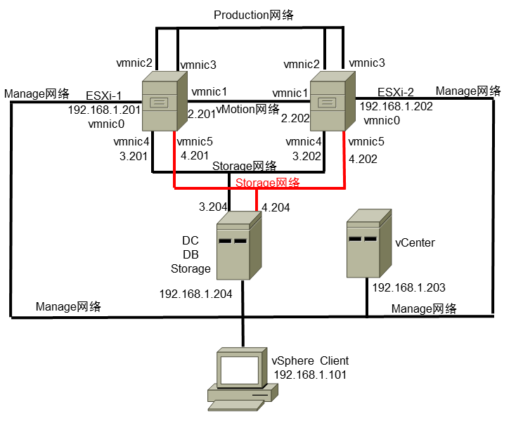
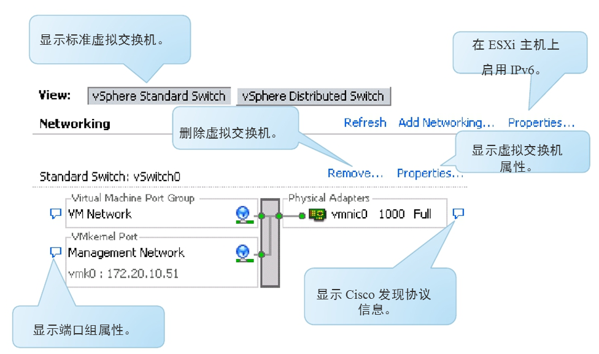
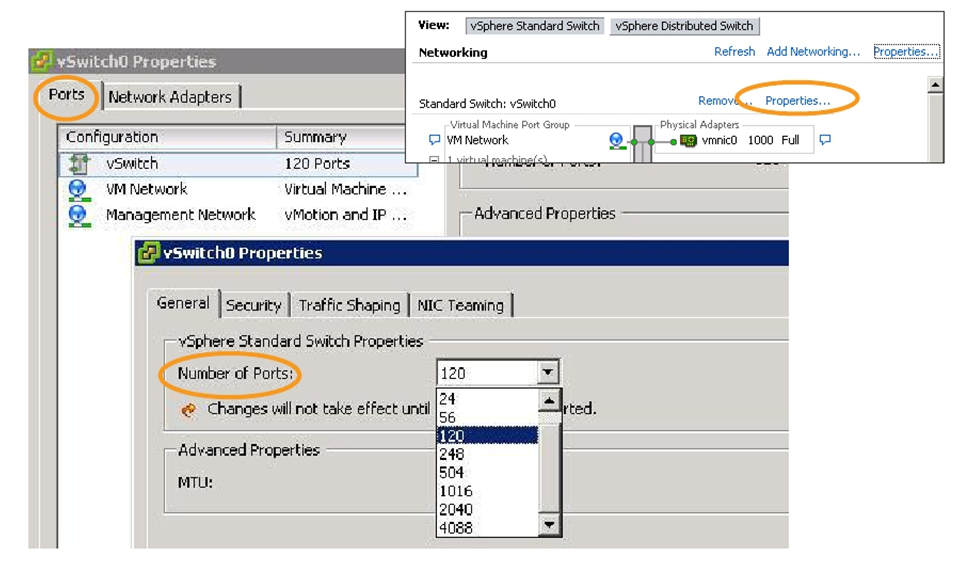
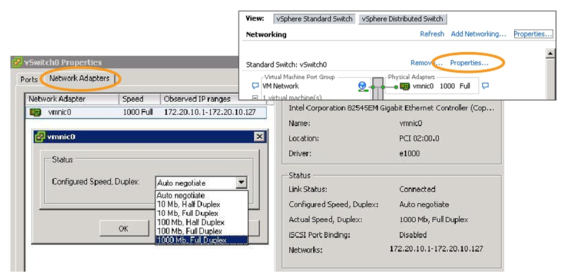
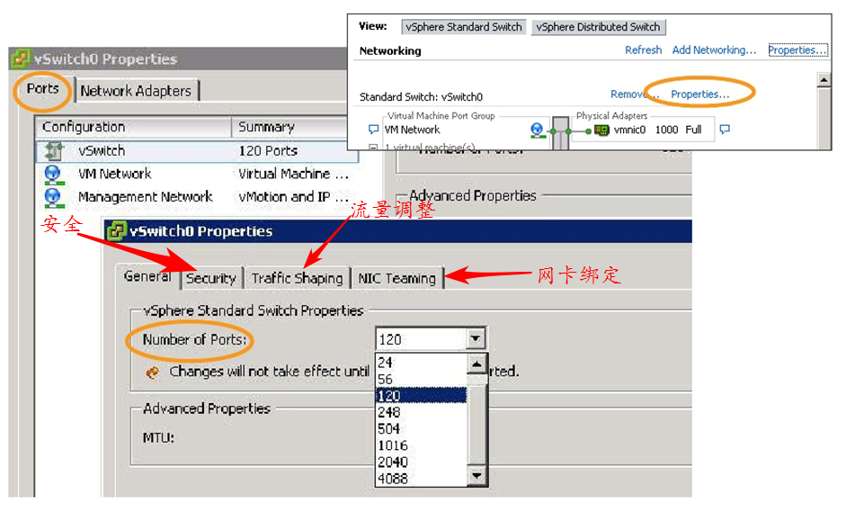

VMware中的交换机
更新日期:
虚拟网络
虚拟网络是VMware中非常重要的概念，并且不太好理解。虚拟网络是干什么的呢？虚拟网络就是连接虚拟机和实际物理网卡。它是怎么连接的呢？就是通过虚拟交换机。
虚拟交换机的作用
可以理解为虚拟机的网口和实际的物理网卡的网口都连接到了虚拟交换机上，这样虚拟机就可以通过物理网卡访问外部网络，或者访问别的虚拟机，管理员管理虚拟机，物理机之间做虚拟机的迁移，将多个物理网卡整合成一个网卡，并且平衡他们直接的流量和故障切换这些都得通过虚拟交换机连接来实现。

虚拟交换机的分类
标准交换机
重点理解标准交换机，标准交换机就是在单个物理机里配置的交换机。
分布式交换机
这个分布式交换机就是在多个物理机里配置的交换机了，注意是为了在物理机很多的情况下可以方便快速的配置交换机，同时在虚拟机迁移时能正常迁移，避免迁移到另外一台物理机上时虚拟的网络就不通了。其实跟标准交换机一样，就是配置的时候同时配置多个物理机而已。
虚拟交换机端口的分类
VMkernel端口：
- 用于ip-san的存储
- vMotion迁移
- ESXi的管理网
虚拟机端口：
就是连接虚拟机的端口啦。而且还可以在这上面划Vlan，真是屌啊。

虚拟交换机的连接方式
VMware中有许多种网络了，有管理网，生产网即业务网，vMotion用的网，ip存储用的网等，这些网络可以接到一台虚拟交换机上，也可以分别接到不通的虚拟交换机上，当然了，我们肯定是推荐后者，互不干扰嘛。

实际案例的拓扑结构
在这个案例中，一共有两个物理机，每个物理机有6个网卡，其中vmnic0是用作管理网，vmnic1是用作vMotion网，vmnic2和vmnic3绑定成一个口，用作生产网即实际使用过程中的业务网，vmnic4和vmnic5绑定，用作连接存储。

配置界面
下面是交换机的配置界面

可以更改标准虚拟交换机上的端口数

对于每个物理适配器，可以更改速度和双工设置。

标准虚拟交换机的策略设置
标准虚拟交换机的策略包含三个方面：安全策略、流量调整的策略、网卡绑定的策略。
